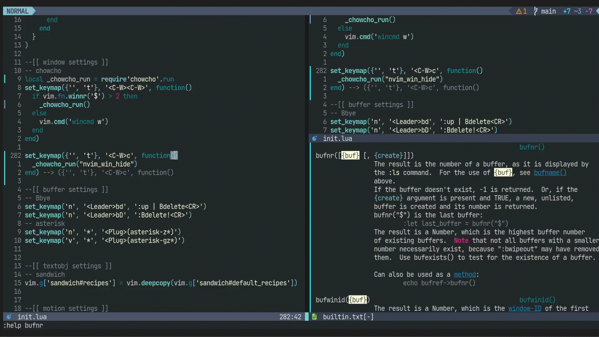

chowcho.nvimを使うと、Neovimの各windowに番号が表示され、目的番号を入力すると、フォーカスを移動できます。
https://github.com/tkmpypy/chowcho.nvim
今回、この機能を一般化し、winidを受け取る任意の関数を実行できるようにしました。
PRを無事にマージしてもらえたので、どなたでもご利用頂けます。
以下にいくつか例を載せます。
require('chowcho').run(vim.api.nvim_win_hide)
(動画GIF内のコードはマージ前の古いものなので、雰囲気だけお楽しみください)
<C-W>eにマップしています。
vim.keymap.set({'', 't'}, '<C-W>e', function()
if vim.fn.winnr('$') <= 1 then return end
require('chowcho').run(function(n)
vim.cmd("buffer " .. vim.api.nvim_win_call(n, function()
return vim.fn.bufnr('%')
end))
end)
end)<C-W>xにマップしています。
元々の<C-W>xはカウントに指定した番号のwindowと現在のwindowを入れ替えます。しかし、同じ方向に分割したwindow同士でしか交換できないのは不便に感じていました。
Windowの数が2以下の場合はwincmd xが発動します。
3以上の時の動作はbufferコマンドを使っていますが、加えてバッファローカルなオプションも引き継ぐようにしています。特にreadonlyなバッファをbufferコマンドで開くと、編集可能になるので、これを防ぐ狙いです。
local _chowcho_run = require'chowcho'.run
local _chowcho_bufnr = function(winid)
return vim.api.nvim_win_call(winid, function()
return vim.fn.bufnr('%'), vim.opt_local
end)
end
local _chowcho_buffer = function(winid, bufnr, opt_local)
return vim.api.nvim_win_call(winid, function()
local old = _chowcho_bufnr(0)
vim.cmd("buffer " .. bufnr)
vim.opt_local = opt_local
return old
end)
end
vim.keymap.set({'', 't'}, '<C-W>x', function()
_chowcho_run(function(n)
if vim.fn.winnr('$') <= 2 then
vim.cmd("wincmd x")
return
end
local bufnr0, opt_local0 = _chowcho_bufnr(0)
local bufnrn, opt_localn = _chowcho_buffer(n, bufnr0, opt_local0)
_chowcho_buffer(0, bufnrn, opt_localn)
end)
end)